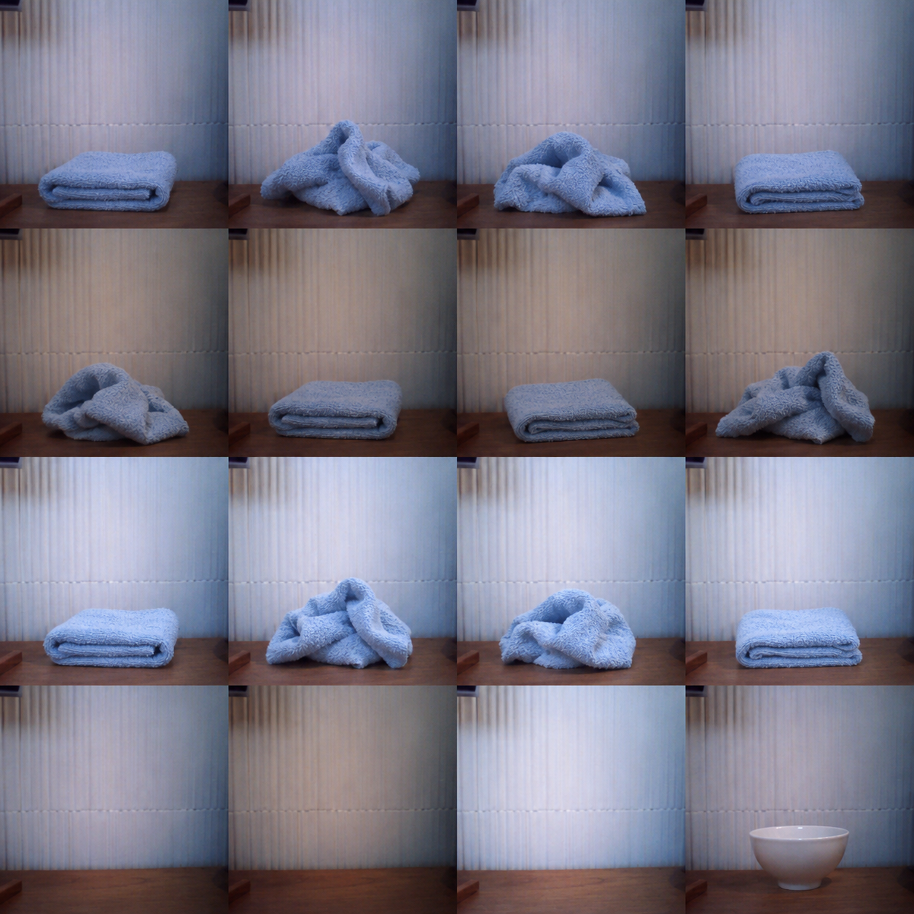
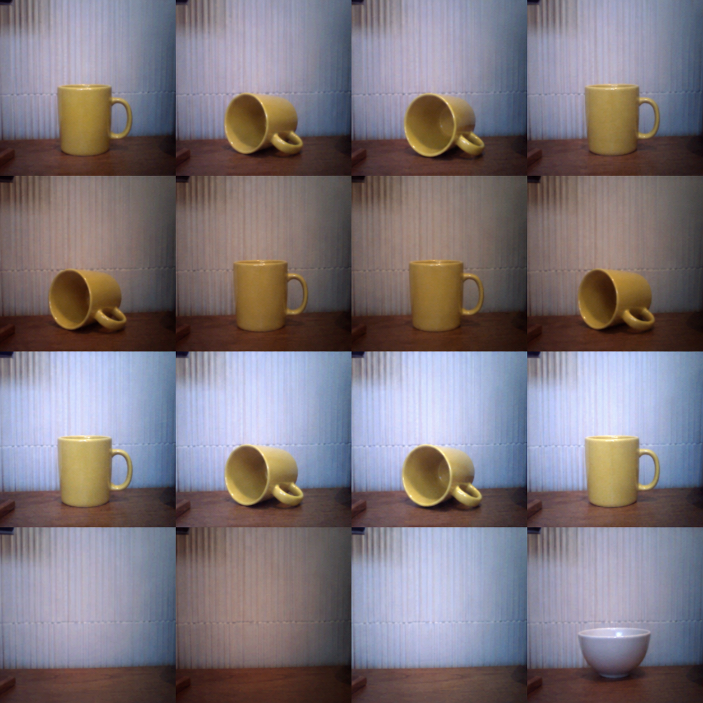
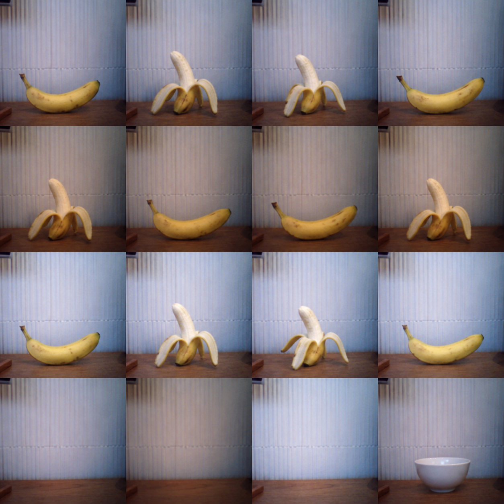
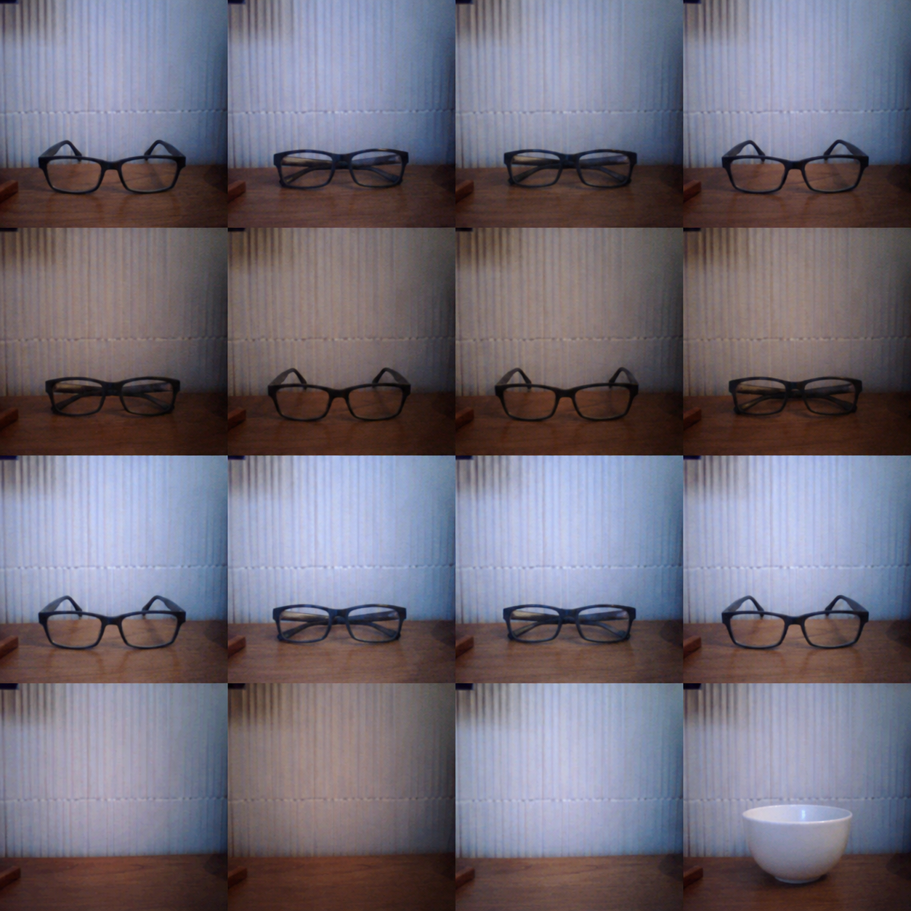
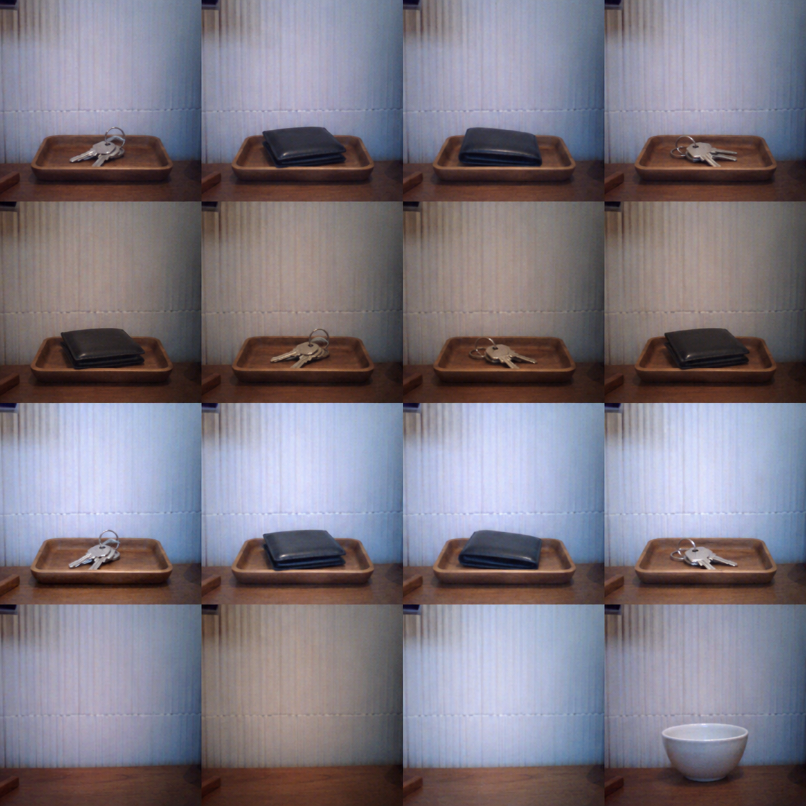
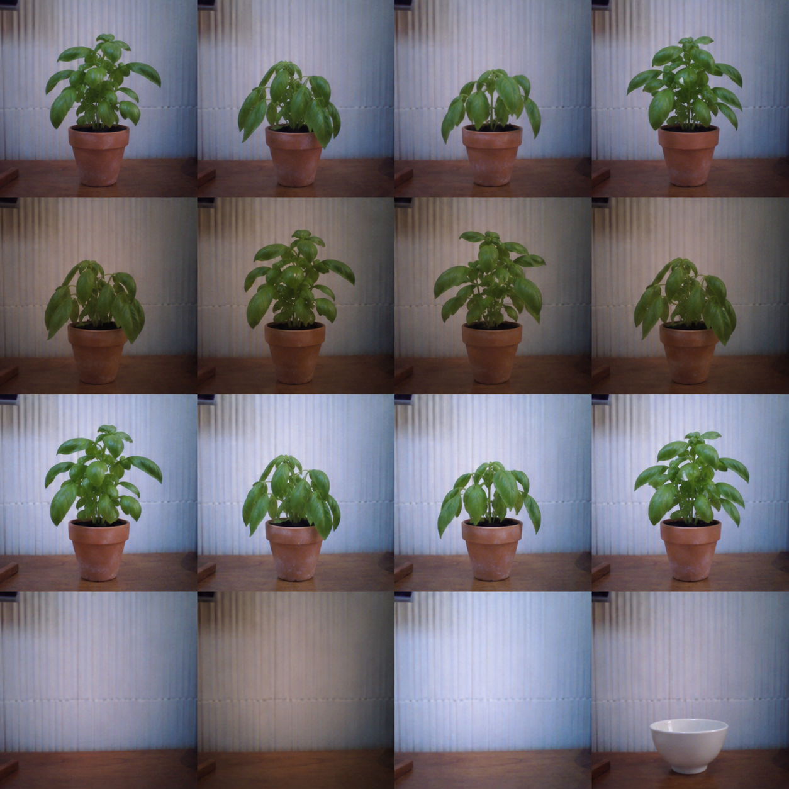
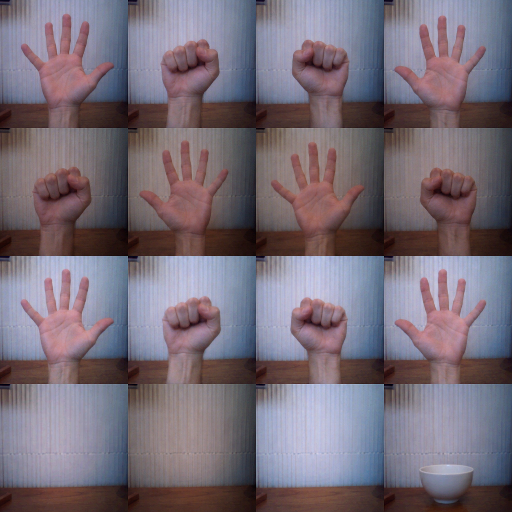

タオル：畳んだ／くしゃくしゃ
a neatly folded towel / a crumpled towel


State labels and shared object/background pass visual review. Near-duplicate restagings; one generated sheet, not independent scenes.
2026-09-26 · 実機なし · 出荷済みint4モデルのC実装で評価
最初に検討する候補は、タオルの畳み方とマグカップの向き。
以下は少数の合成画像に対する探索結果です。実機の検出精度ではありません。画像エンコーダーは実装そのものですが、判定には簡略化した参照比較を使っています。手の対照も実機の報告を完全には再現していません。
| 状態の違い | 通常 | 画質変動の最悪条件 | 照明変更・再登録なし | 空の机も候補に追加 |
|---|---|---|---|---|
| タオル：畳んだ／くしゃくしゃ | 6/6 | 5/6 | 8/8 | 3/6 |
| マグカップ：直立／横倒し | 6/6 | 5/6 | 6/8 | 6/6 |
| バナナ：皮あり／皮むき | 5/6 | 3/6 | 4/8 | 4/6 |
| 眼鏡：開いた／畳んだ | 4/6 | 4/6 | 6/8 | 3/6 |
| トレー：鍵／財布 | 3/6 | 3/6 | 5/8 | 3/6 |
| バジル：葉が立つ／垂れる | 2/6 | 2/6 | 5/8 | 2/6 |
| 対照：手のひら／握りこぶし | 5/6 | 3/6 | 8/8 | 4/6 |
「通常」は登録に使わなかった6画像での正解数。3つの照明条件ごとに登録しています。「照明変更」は最初の照明で登録したまま別の照明の8画像を評価。画像は同一生成内の近似例であり、独立した実験ではありません。「空の机も候補に追加」は物体画像が空の机と誤分類されないかを見る列で、空画像の検出率ではありません。
実機の写真を参照し、背景・画角・低画質を生成指示に反映。評価時は128×128・RGB565入力に変換しました。追加の露出、色かぶり、ぼけ、ノイズは感度確認用の仮定です。実カメラの挙動を再現できたとは主張していません。
14組を計画し、8組を生成。はさみは不自然な構図のため評価前に除外。箱、リンゴ、ペットボトル、フォーク／スプーン、米の容器、色違いキューブは生成サービスの認証エラーで未評価です。
実験方法・限界・再実行手順 · 全数値 · 全生成プロンプト · 画像の採否記録
a neatly folded towel / a crumpled towel

State labels and shared object/background pass visual review. Near-duplicate restagings; one generated sheet, not independent scenes.
an upright mug / a mug lying on its side

State labels and mug identity pass. Slight framing/size changes remain; no real spill is being detected.
an unpeeled banana / a peeled banana

State labels pass; peeling also changes orientation/shape substantially. This screens preparation state, not ripeness or food safety.
a pair of unfolded eyeglasses / a pair of folded eyeglasses

Folded/unfolded temples are visible; small geometric cue at 128px. Stable frame color/background.
a tray with keys / a tray with a wallet

Keys/wallet states pass. Object identity and dark occupied area differ; not a presence/forgotten-keys benchmark.
a healthy basil plant / a wilted basil plant

Upright/drooping leaves pass visual review. This does not establish watering need or plant health diagnosis.
an open hand / a fist

Positive control. Generated hands switch handedness in some repeats, but both states include both orientations; not real camera evidence.